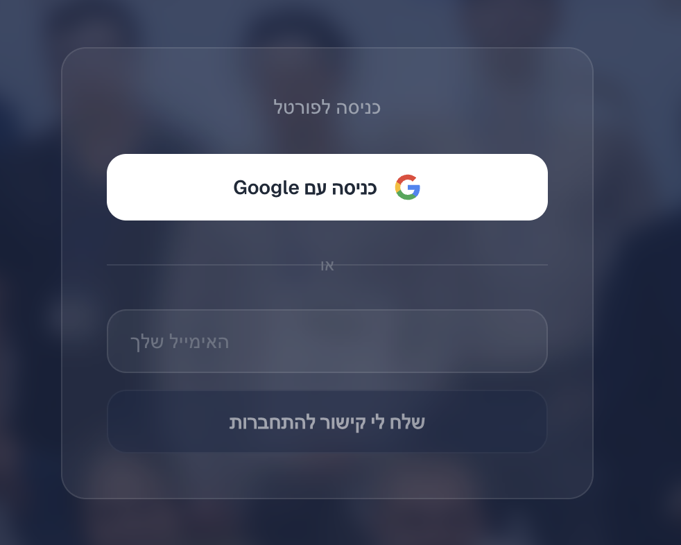
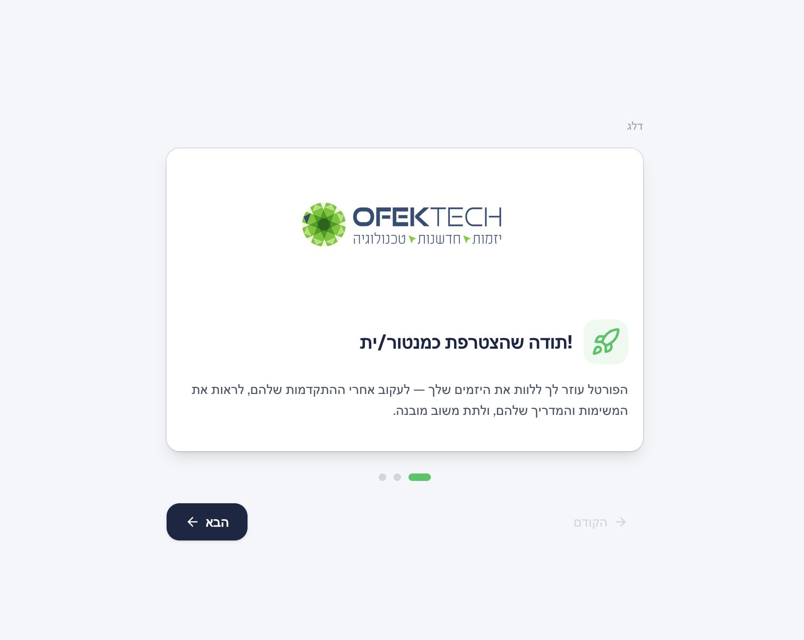
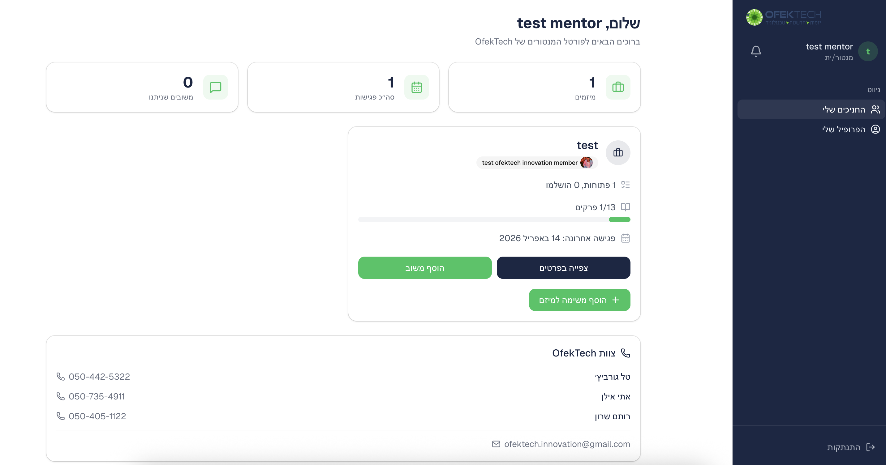
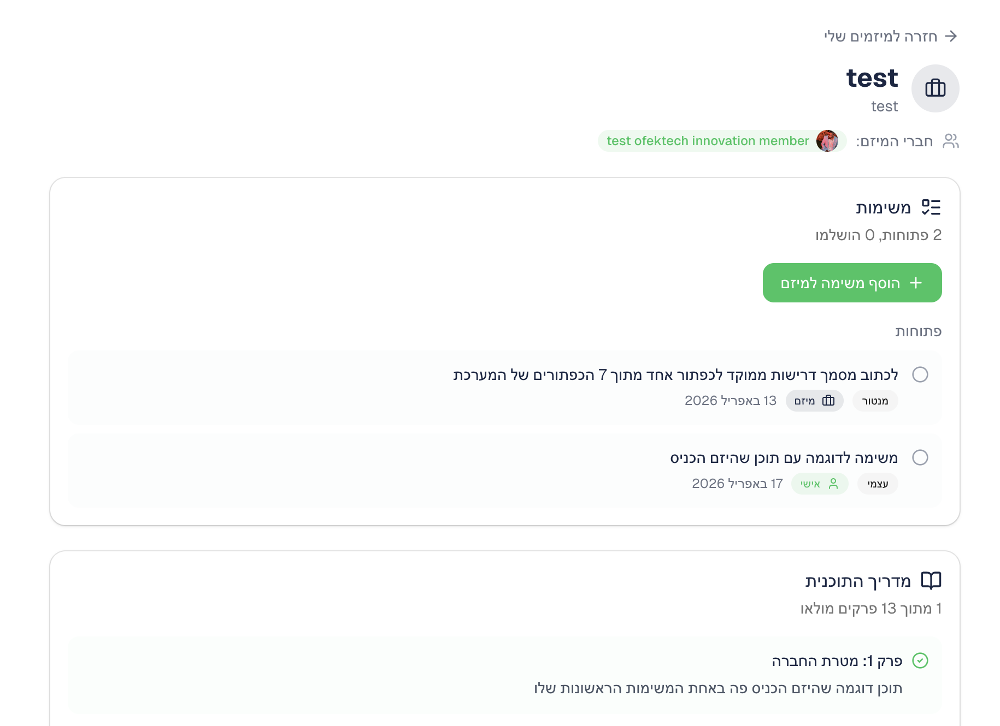
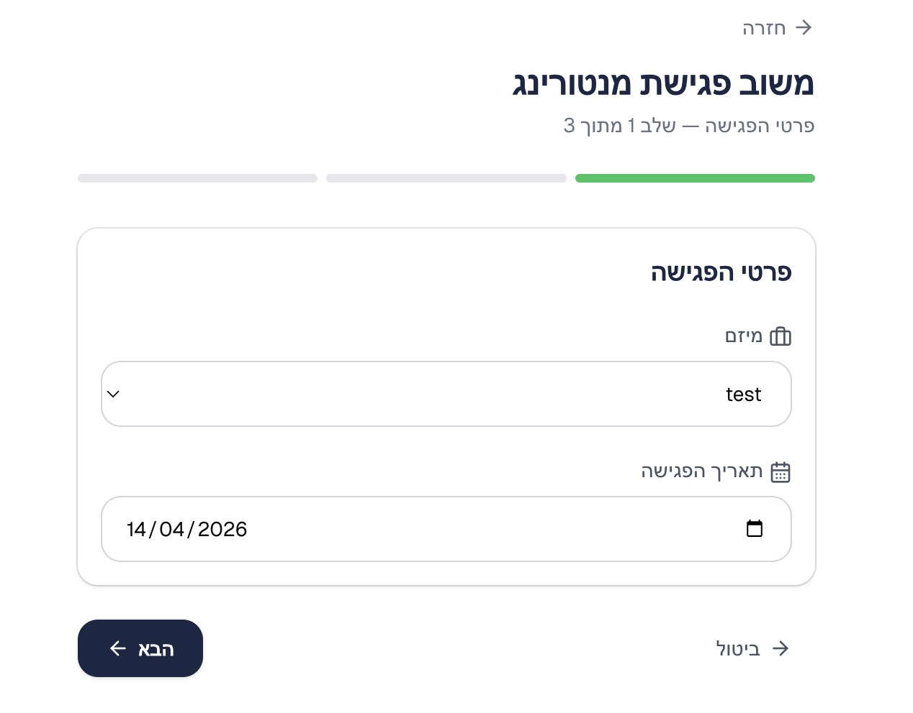
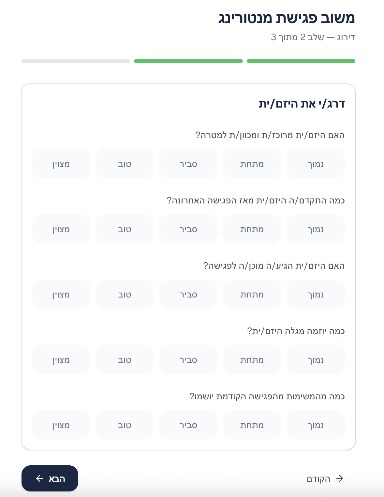
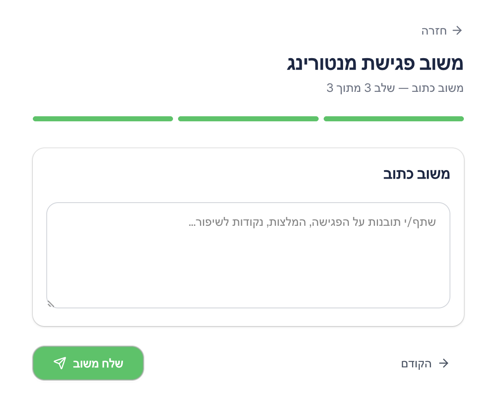
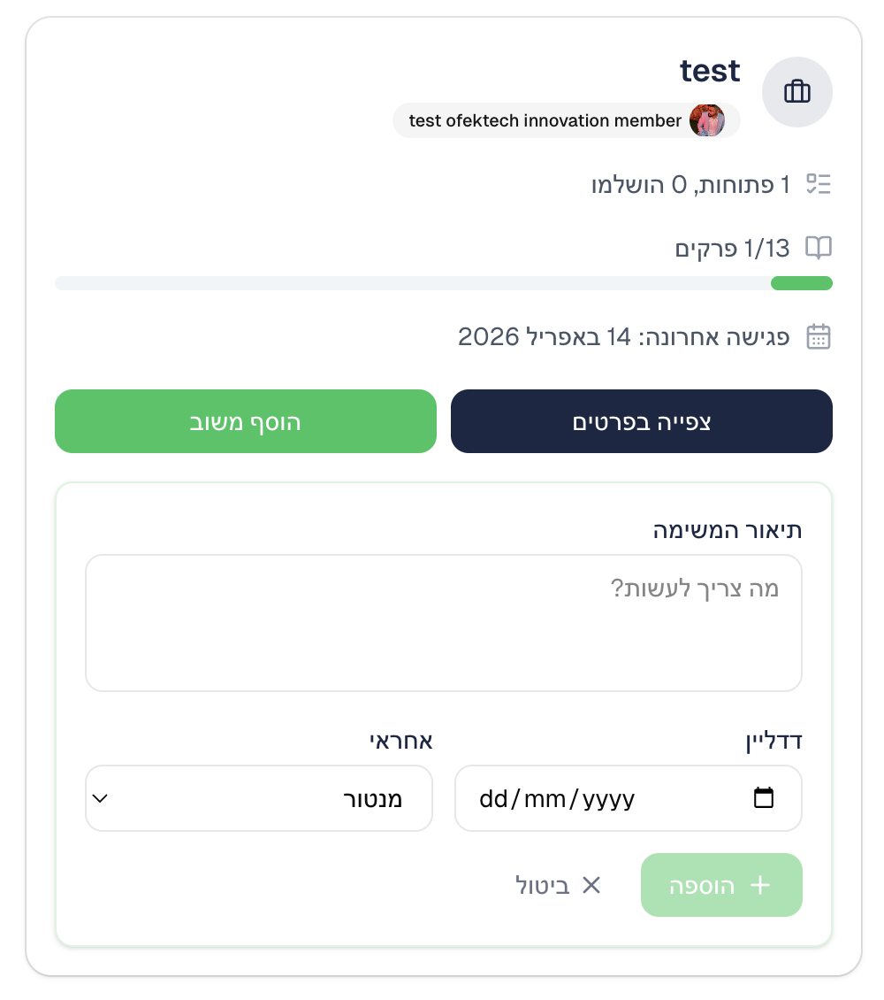

OFEKTECH
יזמות · חדשנות · טכנולוגיה
מדריך למנטורים
כל מה שצריך לדעת כדי ללוות את היזמים שלך בפורטל
אפריל 2026
1. כניסה לפורטל
לאחר שתקבלו מייל הזמנה מצוות OfekTech, תוכלו להתחבר לפורטל בכתובת:
ofektech-portal.co.il
שני אופני התחברות:
- כניסה עם Google — לחצו על הכפתור והתחברו עם חשבון ה-Google שלכם (לא חייב להיות Gmail — כל חשבון Google עובד)
- קישור לאימייל (Magic Link) — הכניסו את האימייל שלכם ותקבלו קישור ישיר לתיבת הדואר

מסך הכניסה לפורטל
שימו לב: רק משתמשים שהוזמנו על ידי מנהלי התוכנית יכולים להתחבר. אם נתקלתם בבעיה, פנו ל-ofektech.innovation@gmail.com
2. סיור היכרות (אונבורדינג)
בכניסה הראשונה לפורטל, תעברו סיור קצר שמסביר את הכלים העומדים לרשותכם. הסיור כולל 3 מסכים:
- ברוכים הבאים — הסבר כללי על הפורטל
- החניכים שלך — איך לעקוב אחרי ההתקדמות של המיזמים
- משוב מובנה — איך לתת משוב אחרי כל פגישה

המסך הראשון בסיור ההיכרות
טיפ: ניתן לדלג על הסיור, אבל מומלץ לעבור אותו כדי להכיר את הכלים.
3. הדשבורד שלי
לאחר ההתחברות, תגיעו לדשבורד הראשי שמציג את כל המיזמים המשובצים אליכם.
מה תראו בדשבורד:
- שורת נתונים — מספר מיזמים, פגישות ומשובים
- כרטיסי מיזם — לכל מיזם: שם, חברי צוות, התקדמות במשימות ובמדריך, תאריך פגישה אחרונה
- כפתורי פעולה — צפייה בפרטים, הוספת משוב, הוספת משימה
- פרטי קשר — מספרי טלפון ואימייל של צוות OfekTech

הדשבורד הראשי — סקירת כל המיזמים שלך
4. צפייה בפרטי מיזם
לחיצה על "צפייה בפרטים" בכרטיס מיזם תפתח דף מפורט עם כל המידע על המיזם.
מה תראו בדף המיזם:
- משימות — רשימת המשימות הפתוחות וההשלמות של הצוות (קריאה בלבד)
- מדריך התוכנית — מה היזמים כתבו בכל אחד מ-13 הפרקים
- היסטוריית משובים — כל המשובים שניתנו בפגישות קודמות

דף פרטי מיזם — משימות, מדריך ומשובים
חשוב לדעת: כל משוב שתיתנו נגיש ליזמים ולמנהלי התוכנית — שקיפות מלאה.
5. הוספת משוב על פגישה
אחרי כל פגישה עם מיזם, לחצו על "הוסף משוב" בכרטיס המיזם. תפתח טופס בן 3 שלבים:
1 פרטי הפגישה
בחרו את המיזם (אם לא נבחר אוטומטית) ואת תאריך הפגישה.

שלב 1 — בחירת מיזם ותאריך
2 דירוג
דרגו את היזם/ית ב-5 קריטריונים:
- מיקוד — האם היזם/ית מרוכז/ת ומכוון/ת למטרה?
- התקדמות — כמה התקדם/ה מאז הפגישה האחרונה?
- מוכנות — האם הגיע/ה מוכן/ה לפגישה?
- יוזמה — כמה יוזמה מגלה?
- יישום — כמה מהמשימות יושמו?

שלב 2 — דירוג ב-5 קריטריונים
3 משוב כתוב
כתבו משוב חופשי — תובנות, המלצות, נקודות לשיפור.

שלב 3 — משוב כתוב חופשי
טיפ: אחרי שליחת המשוב, היזמים ומנהלי התוכנית יקבלו התראה ואימייל.
6. הוספת משימות למיזם
ניתן להוסיף משימות ליזמים ישירות מהדשבורד. לחצו על "+ הוסף משימה למיזם" בכרטיס המיזם.
פרטי המשימה:
- תיאור — מה צריך לעשות
- דדליין — תאריך יעד (אופציונלי)
- אחראי — מנטור, המיזם, או צוות

טופס הוספת משימה למיזם
המשימה תופיע ברשימת המשימות של המיזם, והיזמים יקבלו התראה על משימה חדשה.
טיפ: השתמשו במשימות כדי לתעד החלטות מפגישות ולוודא מעקב.